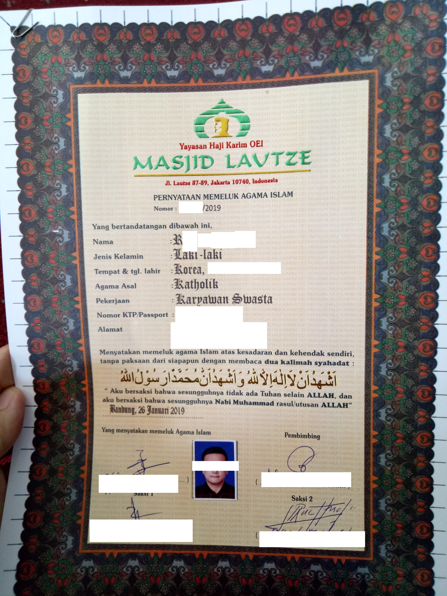
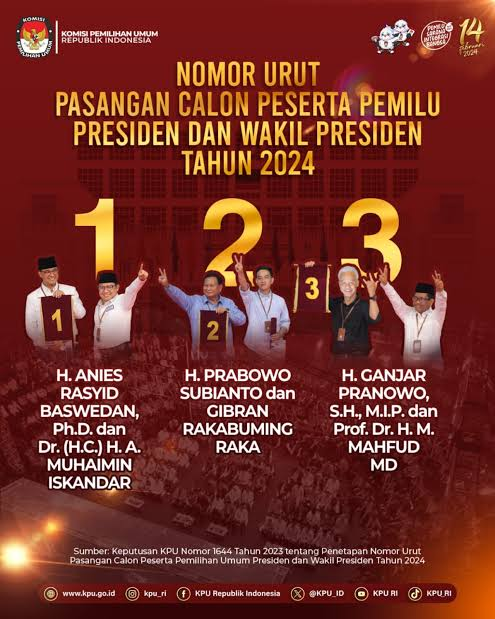
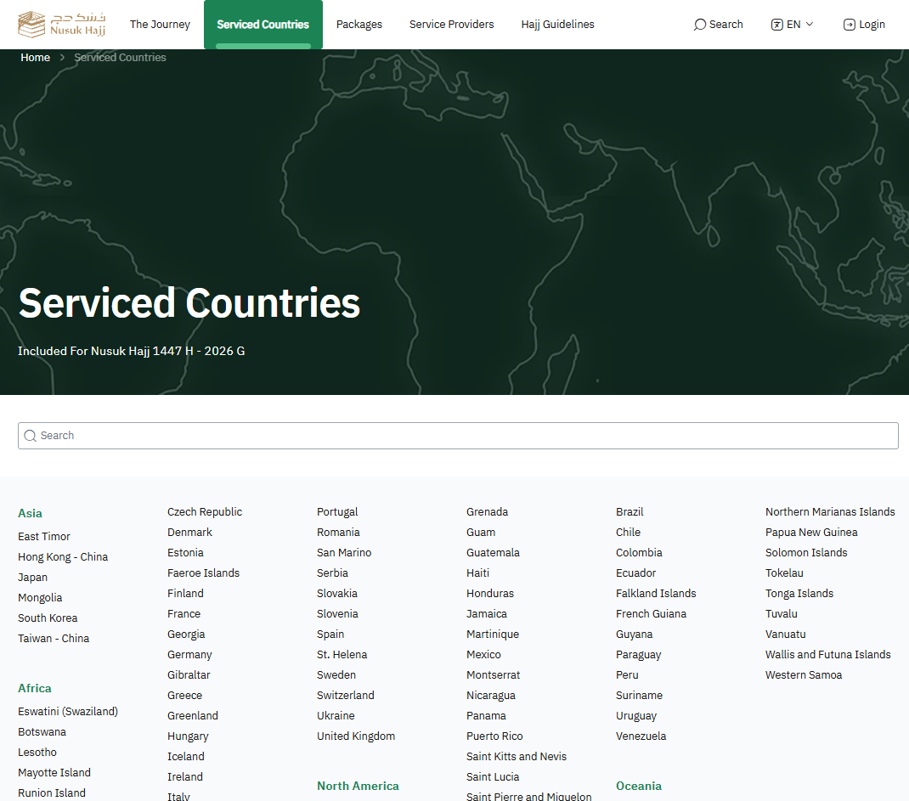
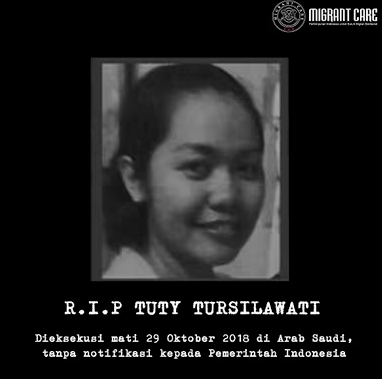

안뇽?
전에 댓글로 [무슬림이 되었다]라고 쓴 개붕이야.
위의 사진은 예전에 내가 무슬림으로 개종하고 나서 받은 무슬림 증명서야.
이슬람에 대해서 험한 말이 나오는데 그 중 몇가지 잘못된 정보도 있고,
몇가지 내가 겪은 썰도 있고,
모르는 사람끼리 잘못된 정보를 서로 주고받으면서 그렇구나!!라고 하는 것도 웃겨서
그냥 글을 써봤어.
이 글은 육하원칙 없고, 기승전결 없는, 무논리의 글이며
그냥 카페에서 커피 한 잔 마시면서 이야기하는 정도의 수준이라고 생각하면 편해.
그리고 이건 제일 중요한 거라서 서두에 박고 시작할게.
나이롱 신자이자 삼겹살과 막창을 매주 처먹는 내가 20억 이슬람 신자를 대변하지 않아.
북아프리카 무슬림-중동 무슬림-인도 무슬림-동남아 무슬림은 지역별 국가별 갭이 매우 커.
그러니 내가 푸는 이야기는 동남아 그 중에서도 인도네시아에 한정된 이야기니까
모든 무슬림이 이렇다라고 생각하진 말아줘.
이슬람은 종교가 아닌 생활 양식 그 자체다. 샤리아법으로 침략할 것이다.
무슬림이 신의 뜻에 따라 살아가기 위한 포괄적인 삶의 규범 체계를 샤리아라고 해.
근데 샤리아는 법이 아니야.
이슬람에서 법은 피크 (Fiqh)라고 하고, 법학자가 샤리아를 해석하고 현실 법률로 구체화하는 과정이지.
그래서 샤리아는 규범이라고 봐야하고, 샤리아가 현대 각 이슬람 국가들의 법률 체계에 영향을 줘.
크게 세가지 범주로 나뉘는데
1) 전면 적용 국가- 형법·민법·공법 전반
사우디 아라비아와 이란이지. 제일 골때리는 놈들이야.
2) 이원적 혼합 국가- 가족법 한정 적용
인도네시아 / 이집트 / 말레이시아 가 대표적인 국가지
다른 나라는 잘 모르지만 내가 살던 인니의 경우, 종교청Pengadilan Agama 이 따로 부서가 있어
인도네시아 헌법은 네덜란드 대륙법을 기반으로 하고 있는데, 무슬림의 결혼, 상속, 기부,샤리아금융법(무슬림은 원칙 상 이자금지)
등에 한해 다뤄. 근데 웃기는게 인도네시아에서 이슬람 꼴통인 지역인 아체(Ache)주는 이슬람 자치구랍시고 따로 까눈이라는 법이 있어
이 동네는 인도네시아 안에서도 엄격한 동네라서 뽀뽀했다고 태형을 주는 동네야.
3) 완전 세속 국가
튀르키, 중앙아시아 -스탄 국가들
사실 종교라는 것이 우리 한국인(그리고 일본애들도)의 생각하는 것이 타 국가에 비해 좀 독특하긴 해.
어떤 교리를 바탕으로 행위의식을 공유하고 공동체를 구가하는 것에서
종교와 생활양식을 딱딱 자르는 것이 오히려 어려워.
난 그냥 아래 내용을 기준으로 둬야한다고 봐.
=각 국가의 법률과 사회 전반적인 인식(이것도 참 한국인 마인드긴 하지만)에 부합되는가? 위배되진 않는가?
이슬람을 믿는 국가 구성원이 대다수인 국가들도 각 국가별로 단합하진 않거든.
이집트에서 대박쳤던 레닌 알람리의 'In plain Arabic'이라는 연극이야.
내용은 챗지피티의 도움으로 간략하게 가져왔어.
영국 런던의 한 기숙사(하숙집)에 아랍 14개국을 각각 대표하는 14명의 아랍 유학생 친구들이 함께 머물고 있습니다.
이들은 영국의 TV 방송국과 함께 "서구 사회에 아랍인이 얼마나 문명화되고 하나로 단결되어 있는지 보여주자"며 다큐멘터리 촬영을 준비합니다.
촬영을 앞두고 가장 핵심 역할을 맡기로 했던 팔레스타인인 학생 '파예즈(Fayez)'가 돌연 납치(실종)되는 사건이 벌어집니다.
남은 14명의 아랍 친구들은 "형제인 팔레스타인 친구 파예즈를 반드시 구출하겠다!"고 비장하게 맹세하며 대책 회의를 시작합니다.
하지만 실제 구조 행동에 나서는 대신 각 나라의 전형적인 정치적 클리셰를 그대로 재현하며 자멸합니다.
이집트 유학생: 과거 역사와 문화적 종주국임을 내세워 당연하다는 듯 의장 자리를 요구하고 감성적인 연설을 주도하지만,
정작 실질적인 행동이나 비용 부담에서는 말을 돌립니다.
걸프 산유국(사우디·쿠웨이트 등) 유학생: 돈으로 런던의 빅벤과 런던탑까지 사들일 수 있다고 호언장담하는 황금만능주의를 보입니다
파예즈 구출에도 직접 발로 뛰는 대신 수표 한 장으로 해결하려 하거나,
행여나 영국 경찰과의 마찰로 자신의 비자나 호화 유학 생활이 취소될까 봐 전전긍긍합니다.
이라크·시리아·리비아 학생: "제국주의와 이스라엘의 음모다!"라며 과격한 군사적 구호와 허세만 부리고 서로를 스파이로 의심합니다.
레바논 등 기타 학생: 각자의 종파와 사소한 이해관계를 따지며 분열합니다.
결말: 각자 자국 방언(사투리)으로 싸우다가 공식 성명을 발표할 때만 '표준 아랍어(In Plain Arabic)'로 거창하게 포장합니다.
심지어 파예즈가 테러리스트로 몰리자 자신들에게 불똥이 튈까 봐 슬그머니 발을 뺍니다.
사실 사건이 일어난 그 시각, 파예즈는 테러를 저지른 것이 아니라
다른 아랍 유학생 친구들과 함께 런던의 나이트클럽에서 밤새 술을 마시고 유흥을 즐기고 있었습니다.
친구들이 경찰에게 "파예즈는 그날 밤 우리와 함께 나이트클럽에 있었다"고 사실대로 증언만 해주면
파예즈의 무고함이 즉시 입증되어 풀려날 수 있는 상황이었습니다.
그러나 아랍 유학생들은 전원 증언을 거부합니다.
자신들이 경건하고 모범적인 무슬림·아랍 유학생이 아니라 밤새 나이트클럽에서 술 마시며 놀았다는 사실이
본국 가족과 정부, 그리고 영국 다큐멘터리 제작진에게 알려지면 자신들의 도덕적 명예가 실추된다는 이유 때문이었습니다.
결국 팔레스타인 친구를 구하기는커녕 영국 카메라 앞에 유창한 표준 아랍어로
"아랍의 영원한 단결과 형제애, 팔레스타인의 해방"을 우렁차게 합창하며 극이 끝납니다.
---------------------
위 연극은 1991년 카이로에서 1년 넘게 전석 매진 기록을 했고, 책으로도 나올 정도로 엄청난 흥행을 했었어.
이 무대를 통해 데뷔한 신인들은 훗날 현대 이집트 영화·드라마계를 지배하는 초대형 스타로 성장할 정도야
당시 워낙 아랍지역에서 난리가 났던 연극이라서 레닌 알람리는 나중에 이런 글도 남겨.
[위선자에게는 두 개의 얼굴이 있고, 거짓말쟁이에게는 네 개의 얼굴이 있다. 하지만 우리(아랍인)에게는 백 개의 얼굴이 있다!
우리 사회에서 '진실'은 신성한 의무라고들 말하지만 정작 어디에도 없다.
만약 누군가 진실을 가져오면 그에게 상을 주는데, 그 상이란 '채찍질 10만 대와 교수대'다.
바로 그것이 문제다.]
저기 14명의 학생대표들은 모두 아랍인들이야.
연극 발표가 1991년이지 실제 글이 쓰여진 시기는 70년대니까 중앙아시아 이슬람은 없어. 그리고 인도계(파키스탄-방글라데시) 이슬람도,
단위 국가당 가장 많은 무슬림을 보유한 인도네시아도 없고, 부르나이도 없고, 말레이시아도 없어.
아랍지역의 이웃 형제국가라고 생각하는 지리적 한계는 잘 쳐줘야 이란까지야.
같은 형제국가들끼리도 저렇게 단합이 잘 안되는데,
같은 종교믿는다고 남아시아, 동남아시아 애들을 동급으로 쳐줄까?
필리핀 가톨릭 신자와 에콰도르 가톨릭 신자와 아일랜드 가톨릭 신자를
가톨릭이란 카테고리 하나로 다 싸그리 퉁치지 않듯이, 이슬람 믿는 국가들끼리도 단합이 잘 안 된다고 보면 된다.
이슬람 난민들이 문제를 일으키니 모든 이슬람놈들 추방하자
이번 프랑스 약탈도 그렇고 요즘 서유럽이 이슬람 난민들이 들어와서 치안문제를 일으키고 있잖아.
근데 이건 우리 나라랑은 완전 별개의 문제고 향후 우리한테 큰 문제는 안 될 것 같다고 난 생각해.
1) 유입인의 구성
유럽이랑 우리나라는 시작점부터가 아예 달라.
서유럽은 중동이나 아프리카랑 지중해나 지브롤터 쪽으로 바로 연결돼 있잖아.
난민들 혹은 시커먼 사내놈들이 신원 확인도 안 된 채로 수십만 명씩 밀려들어 온 거야.
게다가 옛날 식민지 시절에 넘어온 이민자 2세, 3세들이 주류 사회에 못 섞이고 사회 빈곤층으로 고립돼서 지내다 보니,
그 분노가 과격한 이슬람 근본주의로 터져 나온 거거든.
열등감을 느끼던 애들이 본인이 내세울 것으로 없다보니 종교에서 자신감 충전하는거야.
그래서 난 캣맘이랑 비슷하다고 본다.
반면에 우리나라는 삼면이 바다고 위에는 북돼지가 막고 있음.
난민 심사도 세계 최고 수준으로 깐깐해서 인정률이 1~2%고..
지금 한국에 사는 무슬림(약 25만~30만 명)은 난민이 아니라,
인도네시아나 우즈베키스탄, 파키스탄 같은 나라에서 범죄 경력 조회 다 거치고 정식 취업 비자(E-9)나 유학 비자 받아서 들어온 사람들이야.
일하다가 나이들거나, 비자기간 만료되면 본국으로 돌아갈 사람들이지....
2) 국내 무슬림의 치안 위협 및 샤리아 강요 가능성 검증
돈벌러 온 사람들이 일도 힘들어 죽겠는데 돼지고기 가리고 술을 가린다고???
이 사람들이 한국에 온 첫 번째 목적은 '종교 전파'가 아니라 '열심히 돈 벌어서 고향 가족에게 보내는 것'이야.
나도 가끔 본국에 가족 초청해서 아빠 몰래 서프라이즈하는 [어서와 한국은 처음이지]의 열화버전인 글로벌 아빠 찾아 삼만리 보는데
나이가 들어서 그런가 볼 때마다 눈물나더라....
브로커 비용까지 내면서 어렵게 한국에 들어왔는데 자기 밥줄 끊길 짓을 할 이유가 없지.
게다가 같은 무슬림이라도 인도네시아어, 우즈베크어, 우르두어로 쓰는 말도 다 달라서 뭉치기도 힘들어.
무엇보다 한국에 제일 많이 온 동남아나 중앙아시아 무슬림들은
중동 원리주의자들과 달리 꽤 온건하고 세속적인 편이라, 한국 사회에 대고 샤리아 어쩌구 했다간 바로 뒤짐.
너희 생각보다 한국은 강하고 센 나라야. 한국에 관광온 무슬림들이야 내가 손님인데~~하는 마인드로 어그로 끌지만
인천 남동공단에서 일하는 압둘이랑 김해 공단에서 일하는 이샤랑 기흥 지식산업센터 지하 구내식당에서 제육먹는 삼술씨는
그럴 생각도 없고, 그럴 시간도 없다.
3) 서유럽 사태로 인한 학습된 공포
유럽에서 난민들이 테러하고, 영국에서 샤리아 경찰 노릇 하며 행패 부리는 영상이
유튜브나 인터넷 커뮤니티에 실시간으로 올라오잖아.
그걸 본 우리가 "야, 지금 초기부터 안 막으면 우리나라도 딱 유럽 꼴 난다!" 하고 엄청난 경계심을 갖게 된거야.
경계심을 가진 건 좋은데, 이때다 싶어서 부화뇌동하는 애들이 문제야.
이슬람 믿는 놈들 다 추방시켜! 카바 신전에 폭탄 떨궜으면 좋겠네~~. 이슬람 바퀴벌레들 다 살충제 뿌려야 하는데...
이 발언들 내가 개드립에서 실제로 본 글이야.
요즘 우리가 국력이 신장되면서 한국어를 말하거나 읽을 줄 아는 외국인이 어마어마어마하게 많아졌어.
좀 많네? 하는 수준이 아니고 진짜 많아.
2000년대 초반 네이버 인조이 재판과 가생이닷컴, 개소문닷컴처럼 외국인들이 우리 나라를 어떻게 생각할까? 하는 사이트들이
우리나라에만 있을까? 한국의 별 거 아닌 온라인 글들과 거기 딸린 댓글까지 번역해서 읽는 외국인들이 진짜 많아.
더군다나 요즘 스레드랑 x랑 인스타 같은 경우, 번역기능도 좋아.
굳이 외국애들끼리 이슬람 = cancer 로 치고 받는 와중에 굳이 한국어로 어그로 끌어서 우리한테 좋을 일이 있을까 싶어.
결국 저 멀리 유럽에서 사고 친 과격 난민들이랑, 한국 공장에서 조용히 일하는 외국인 근로자나 유학생들이
한국 사람들 눈에는 똑같은 '무슬림'으로 묶이고 있는거지.
유럽의 실패를 본 한국 사회가 미리 방어벽을 높게 치는 것은 좋은데,
조또 모르는 애들이(찾아보지도 않고 그냥 렉카질하는...) 할 필요도 없고, 내용도 다 틀린 글을 올리면서
국내 무슬림들에게 어그로와 불신과 미움을 주고 있으니 깝깝해 진짜.
경북대 이슬람 사원 건립 문제
경북대 근처에 이슬람 사원 지으려다 주민들이 돼지머리 갖다 놓고 몇 년째 격렬하게 반대한 뉴스 나도 다 보고 있다.
이건 내 입장이야. 사실 거기 사원 건립 안하는게 좋겠어.
거긴 일단 주택가인데-나도 경북대 출신이라 거기 어딘지 잘 앎, 사원이 설립되면 일단 아침마다 아잔소리로 소음문제가 발생할거고,
사람들이 모여들어서 충돌이 일어나는 건 필연적이라 생각해.
그냥 이슬람 친구들은 지금 하듯이 상가 3층~4층에 기도소 만들어서
각자 국가별로 일요일 오전에 모여서 고향음식먹고 같이 기도하고 숙소로 돌아갔으면 해.
우리도 주변에 근린 상가에 들어선 교회 많잖아? 딱 그 정도 포지션으로 갔으면 좋겠어.
정치와 법률에 대한 이슬람 개입과 원리주의자에 대한 취급
JMS랑 신천지, 각종 사이비들을 기독교라고 주장하는 사람 있음?
없잖아.
근데 몸에 폭탄두르고 자폭테러하고 사람 목자르고 떼강간저지르는 놈들은 이슬람취급하더라?
신천지나 JMS놈들이 저지르는 건 사이비의 일부 일탈이고
이슬람 원리주의자들의 정치와 종교개입은 이슬람의 문제냐??
제정신 박힌 놈들은 그런 짓 안함.
종교조직의 높은 놈들 은근슬쩍 스리슬쩍 정치에도 한 목소리 내려고 하는 건 어느 종교나 같아.
대가리를 꺠야지 그런 놈들은....
신천지나 JMS가 우리 나라 국교가 될 확율
이슬람이 저그마냥 불어나서 한국의 헤게모니를 쥘 확율
난 둘 다 가능성 없다고 본다.
아 그리고 다시 말하지만, 아프리카 이슬람, 아랍 이슬람, 인도 이슬람, 중앙아시아 이슬람, 동남아 이슬람 다 다르다.
무슬림에게 있어서 메카 순례란?
오늘 이거 보고 글써야지하고 글을 쓰게 만들었는데, 일단 이거부터 알아보자.
메카 성지순례를 완수한 신자에게는 이름 앞에 공식적인 영예 호칭이 붙어. 다른 나라도 그런진 모르겠는데,
인니에선 남성은 하지(Haji, 약칭 H.), 여성은 하자(Hajjah, 약칭 Hj.)로 호칭이 바껴.
우리는 좀 덜하긴 한데, 영미에서 명함에 닥터 ph.D 붙는 급이라고 보면 돼.
주민등록증(KTP), 여권, 명함, 청첩장, 심지어 선거 벽보나 사망 부고장까지 이름 앞에 반드시 'H.' 또는 'Hj.'를 붙여.
(예: 'Budi' -> 'H. Budi')

지방자치단체장(군수·주지사)이나 국회의원 선거에 출마할 때 포스터에 'H.' 호칭이 빠지면 당선이 어렵다고 여겨질 정도고,
요즘은 좀 덜하긴 해도, 사업을 할 때 '하지' 타이틀이 있으면 사기를 치지 않는 신용 있는 거래처로 인정받아 계약이 잘 될 정도임.
내가 전에도 언급했지만, 사우디아라비아 정부는 국가별 무슬림 인구 비율로 TO를 줘서
인도네시아는 연간 20만~24만 명 안팎의 쿼터를 받지만, 순례 희망자가 수천만 명임.
일반 정부 배정 순례를 신청하면 신청 후 실제 출발까지 평균 25년~40년!!! 걸리는데, 중간에 급행비-하지 로다-를 지불하면 바로 갈 수도 있는데,
이 급행비가 2000만원정도 됨. 일반인들에겐 그림의 떡이지.
성지순례다녀오면, 이름 앞에 박사급에 준하는 호칭이 따로 붙고, 사회적 신뢰도 생기고, 이렇게 '뻬찌 쁘띠'라고 흰 모자를 쓸 수 있는 특권까지 생기니
다들(인도네시안) 해외여행을 가면 가장 가고 싶어하는 국가가 '사우디 아라비아'가 되버리는거지.
근데 한국인은 신청하면 이거 한 달도 안걸림.
누숙 하지라는 사이트에서 각 국가별로 신청을 받는데, 한국 국적 빠와를 제대로 느낄 수 있음

아아 보이는가... 아시아에서 몇 안되는 사우스 코리아의 위엄을!!!
어쨋든 한국인이 메카순례는 누워서 케이크먹기 급으로 쉬운데,
방글라데시/파키스탄/인도네시아/인도는 수도권 아파트 청약만큼 피터지는 경쟁율임.
사우디아라비아와 인도네시아 갈등
전에 잠깐 언급은 했는데, 둘은 같은 이슬람 국가인데,
사우디 대다수 사람들은 방글라데시/파키스탄/인도네시아를 2류인종으로 보고 있음.
인도네시아 시사뉴스를 보다보면 종종 사우디와 인도네시아 갈등 뉴스가 터지는데
이게 어느 정도 수준이냐면 사우디 정부가 사우디 내에서 일하던
인도네시아 가사노동자(성폭행 저항 중 고용주 살해 혐의 등)에 대해 인도네시아에 사전 통보 없이 참수형을 한 사건이야.

2018년 사형된 인도네시아 가정부 뚜띠 뚜르실라와띠
근데 이게 1건이 아냐. 거의 매년 이런 게 발생해. 인도네시아도 자국의 경제가 발전하고(특히 조코위도도 시절)
억눌려왔던 민족의식이 폭발하면서 2018년에 우리나라에서도 뉴스가 알려질 정도로 크게 이슈가 된 적이 있어.
https://www.yna.co.kr/view/AKR20181101138800104
연합뉴스 인용
그리고 내가 인니 거주하면서 봤던 아랍쪽 관광객들의 행태는
중국 애들이 10 정도의 진상력이라면 얘네는 내 체감상 100이었음.
인도 진상보다 더한 게 아랍 진상인데, 공항,비행기 혹은 한국에서 보는 아랍 진상들은 그나마 주변 눈치를 보는 진상임.
역사적,종교적,경제적으로 거의 발 아래로 보는 동남아에서 보는 아랍 진상은
내 좁은 상상력의 한계를 여실히 느낄 정도임
한국 무슬림이 나아가야할 방향?
가톨릭의 금육절과 사순절은 원래 고기를 못먹는 날이야. 금육절은 매주 금요일이고 사순절은 약 40일 정도인데,
요즘 이걸 지키는 가톨릭 신자들은 소수 있지만 이걸 의무로 꼭 지키는 사람은 없어.
난 하람-돼지고기가 대표적-과 할랄에 대해서는 이 가톨릭처럼 되어야한다고 봐.
한국 음식에서 돼지고기가 빠질 순 없고, 이슬람을 믿는다고 꼭 이걸 지켜야하나 싶어.
[금육절과 사순절 안 지킨다고? 너 이단!!] 하면 성당에서 미친 놈 취급받듯,
돼지고기도 먹고 술도 먹고 ㅅㅂ 다 먹는 무슬림 좀 있으면 안되나?
아무래도 이슬람이 사회 바탕에 깔려있는 1세계 선진국이 없고, 후진국에 많이 분포하는 종교다보니,
열등감과 분노로 사는 반동들이 많은 건 사실이야.
교육을 못받은 사람들도 많고, 그래서 지난한 일이라고도 생각해.
글쓰다보니 시간이 많이 걸려서 내가 하고 싶은 이야기의 절반도 못 썼네.
궁금한거나 할 이야기 댓글로 써주면 답변해줌.
그럼 즐거운 일요일 보내셈~~~
정신 차려라. 힙스터 정신 가득한가본데
그 기독교조차 신규가입 적어서 유저수 떡락중인데
기어이 이상한 사막신 같은걸 믿겠다고 그걸 들어가냐?
쪽수 많아지면 대림동 되고 베트남 불체자처럼 치안 박살 구역 양산되는거야